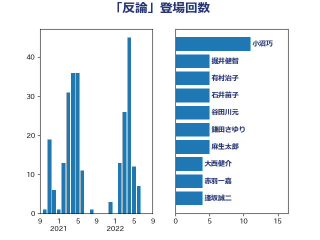

単語「反論」

| 小沼巧 | 立憲民主党 | 11 回 |
| 掘井健智 | 日本維新の会 | 5 回 |
| 有村治子 | 自由民主党 | 5 回 |
| 石井苗子 | 日本維新の会 | 5 回 |
| 谷田川元 | 立憲民主党 | 5 回 |
| 鎌田さゆり | 立憲民主党 | 5 回 |
| 麻生太郎 | 自由民主党 | 5 回 |
| 大西健介 | 立憲民主党 | 4 回 |
| 赤羽一嘉 | 公明党 | 4 回 |
| 逢坂誠二 | 立憲民主党 | 4 回 |
| 長妻昭 | 立憲民主党 | 4 回 |
| 古川禎久 | 自由民主党 | 3 回 |
| 奥野総一郎 | 立憲民主党 | 3 回 |
| 山井和則 | 立憲民主党 | 3 回 |
| 林芳正 | 自由民主党 | 3 回 |
| 浦野靖人 | 日本維新の会 | 3 回 |
| 田村まみ | 国民民主党 | 3 回 |
| 田村憲久 | 自由民主党 | 3 回 |
| 田村貴昭 | 日本共産党 | 3 回 |
| 石川香織 | 立憲民主党 | 3 回 |
| 重徳和彦 | 立憲民主党 | 3 回 |
| 階猛 | 立憲民主党 | 3 回 |
| 音喜多駿 | 日本維新の会 | 3 回 |
| 馬場伸幸 | 日本維新の会 | 3 回 |
| 串田誠一 | 日本維新の会 | 2 回 |
| 宮本徹 | 日本共産党 | 2 回 |
| 山下芳生 | 日本共産党 | 2 回 |
| 山添拓 | 日本共産党 | 2 回 |
| 山田宏 | 自由民主党 | 2 回 |
| 徳永久志 | 立憲民主党 | 2 回 |
| 本村伸子 | 日本共産党 | 2 回 |
| 杉尾秀哉 | 立憲民主党 | 2 回 |
| 松野博一 | 自由民主党 | 2 回 |
| 柳ヶ瀬裕文 | 日本維新の会 | 2 回 |
| 柴山昌彦 | 自由民主党 | 2 回 |
| 柴田巧 | 日本維新の会 | 2 回 |
| 梅村聡 | 日本維新の会 | 2 回 |
| 梶山弘志 | 自由民主党 | 2 回 |
| 森まさこ | 自由民主党 | 2 回 |
| 江田憲司 | 立憲民主党 | 2 回 |
| 浜田聡 | NHK党 | 2 回 |
| 牧山ひろえ | 立憲民主党 | 2 回 |
| 玉木雄一郎 | 国民民主党 | 2 回 |
| 紙智子 | 日本共産党 | 2 回 |
| 芳賀道也 | 国民民主党 | 2 回 |
| 萩生田光一 | 自由民主党 | 2 回 |
| 足立康史 | 日本維新の会 | 2 回 |
| 金子恭之 | 自由民主党 | 2 回 |
| 青山繁晴 | 自由民主党 | 2 回 |
| 青柳仁士 | 日本維新の会 | 2 回 |
| 上田清司 | 国民民主党 | 1 回 |
| 伊藤孝江 | 公明党 | 1 回 |
| 佐藤茂樹 | 公明党 | 1 回 |
| 加藤勝信 | 自由民主党 | 1 回 |
| 務台俊介 | 自由民主党 | 1 回 |
| 北村経夫 | 自由民主党 | 1 回 |
| 北神圭朗 | 無所属 | 1 回 |
| 吉川元 | 立憲民主党 | 1 回 |
| 吉良州司 | 無所属 | 1 回 |
| 嘉田由紀子 | 無所属 | 1 回 |
| 國重徹 | 公明党 | 1 回 |
| 大塚耕平 | 国民民主党 | 1 回 |
| 安江伸夫 | 公明党 | 1 回 |
| 宮本岳志 | 日本共産党 | 1 回 |
| 寺田学 | 立憲民主党 | 1 回 |
| 小川淳也 | 立憲民主党 | 1 回 |
| 小沢雅仁 | 立憲民主党 | 1 回 |
| 小野泰輔 | 日本維新の会 | 1 回 |
| 山下雄平 | 自由民主党 | 1 回 |
| 山本剛正 | 日本維新の会 | 1 回 |
| 山本太郎 | れいわ新選組 | 1 回 |
| 岡本あき子 | 立憲民主党 | 1 回 |
| 岸田文雄 | 自由民主党 | 1 回 |
| 川田龍平 | 立憲民主党 | 1 回 |
| 打越さく良 | 立憲民主党 | 1 回 |
| 斎藤アレックス | 国民民主党 | 1 回 |
| 末松信介 | 自由民主党 | 1 回 |
| 末松義規 | 立憲民主党 | 1 回 |
| 本庄知史 | 立憲民主党 | 1 回 |
| 村井英樹 | 自由民主党 | 1 回 |
| 松沢成文 | 日本維新の会 | 1 回 |
| 枝野幸男 | 立憲民主党 | 1 回 |
| 梅村みずほ | 日本維新の会 | 1 回 |
| 森屋隆 | 立憲民主党 | 1 回 |
| 浅田均 | 日本維新の会 | 1 回 |
| 浅野哲 | 国民民主党 | 1 回 |
| 浜口誠 | 国民民主党 | 1 回 |
| 渡辺周 | 立憲民主党 | 1 回 |
| 礒崎哲史 | 国民民主党 | 1 回 |
| 福山哲郎 | 立憲民主党 | 1 回 |
| 福島みずほ | 社会民主党 | 1 回 |
| 穀田恵二 | 日本共産党 | 1 回 |
| 細野豪志 | 自由民主党 | 1 回 |
| 緑川貴士 | 立憲民主党 | 1 回 |
| 緒方林太郎 | 無所属 | 1 回 |
| 茂木敏充 | 自由民主党 | 1 回 |
| 西村智奈美 | 立憲民主党 | 1 回 |
| 谷公一 | 自由民主党 | 1 回 |
| 鈴木俊一 | 自由民主党 | 1 回 |
| 長浜博行 | 無所属 | 1 回 |
| 高木かおり | 日本維新の会 | 1 回 |